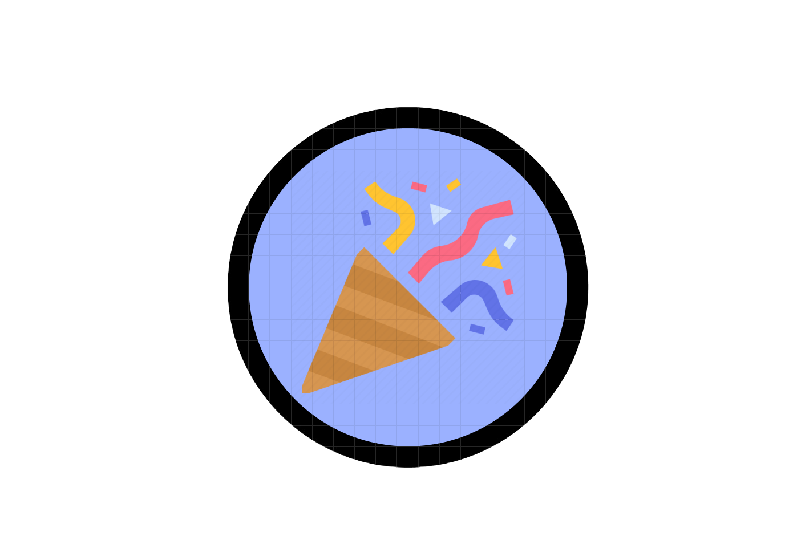

CLICK ME!
Hello all! Welcome to my website, My name is Shohaib Mohammad, and I'm a passionate engineering student born and raised in Dallas Texas, I've always been drawn to computers and programming so I followed my passion all the way to where I am now. As of right now I’m a senior at Texas A&M University and I’m studying as a Computer Engineering major, I embarked on a journey to explore the world of programming at a young age and as you can see right now, I wanted to dip my toe into web development to see how I feel about it, and I can’t lie, making this website has been lots of fun! What truly drives me is just how vast the computer related world really is and thats why my passion for it grows day by day. Whether it's making a website like this, or even just solving problems or creating programs, I immerse myself fully in every project, seeking innovative solutions and striving for excellence. In my free time, I enjoy working out, spending time with friends and family, and of course like most of us, love to play video games. Feel free to browse my site to learn more about some of the projects I’ve worked on in the past or just look around to get to know me more. Don't hesitate to reach out if you'd like to connect or collaborate. Thanks for stopping by!
